新疆人的驕傲
本來的計畫是一大早六點就出發，趁著風還不大，很快的往烏魯木齊走，在中午之前應該就可以抵達。
為了這個計畫可以付諸實現，所以我不能賴床，吃飽晚餐之後回房間早早的就入睡。
夜裡風聲大作、樹木搖晃的沙沙聲從沒停過，不是說白天風勢比較大嗎？怎麼今晚這麼不平靜。
像在颱風登陸的夜晚一樣，呼嘯的風聲伴著我忐忑不安的入眠。
隔天睡醒風勢依舊沒有減弱，氣溫很低，十幾度而已，打開房門往外看，夜裡下了一場大雨，地上都是濕的。
天空中又低又黑的烏雲伴隨著大風往東方移動，是個陰雨而且風勢很大的天呢...
該怎麼辦呢？趁一大早風勢不大出發趕路的計畫已經泡湯了，今天連走不走的成都不知道。
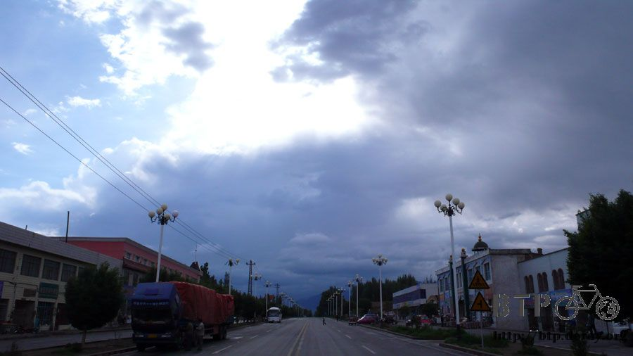
窩在房間裡面看書，希望過一會天氣就會晴朗一點，不然今天就在達坂城多待一天吧。
早上九點的時候，久違的陽光終於露臉，偌大的風把烏雲往東南方吹，西北方漸漸露出藍色的天空。
『是時候了，走吧～小多！』
跟那個我才一住，就說我沒身分證，要叫公安把我抓起來的老闆說掰掰，也跟這個可愛的達坂城說再見。

雨雖然停了，但是風勢依舊很大，吹得我跟小多東搖西晃、左搖右擺，想好好的騎直線都不行。
右邊是一座座又高又冷冽、美麗的像是虛幻一樣的高聳雪山，真的美得很驚人，站定在地上撐著小多不要被吹倒，
屏氣凝神的觀看大自然偉大的景色， 這裡的風特別凍人，但是空氣很新鮮，深呼吸讓肺臟的每一個細胞都吸到清涼的空氣。

離開達坂城，從踩下踏板的第一步開始，就是不停的吹著逆風、側風，時速只有很可笑的六公里。
跟用走的一樣慢，但是我跟自己說再怎麼難騎也要騎下去，只要一旦停下來用牽的，那接下來就再也沒辦法繼續騎了。
達坂城距離烏魯木齊只有短短的九十公里，本來是早上出發，中午就能輕鬆抵達的距離，但因為風勢實在太強，
我從早上九點半開始騎，到了下午四點，也才騎了四十公里出頭，真的很辛酸。
今天不知道怎麼搞的，都沒有好好上餐館吃頓飯，雖然一路上都有給卡車司機休息吃飯的地方，可是我一間也沒有停下來光顧。
慢慢的踩著踏板、咬著牙，無視於餐廳人員的吆喝，揮揮手說不吃，繼續用很慢的速度騎走。
從旁人的眼光看我，應該覺得很好笑，看起來騎的很賣力，可是卻騎的很慢很慢，很像在演默劇一樣，可是我真的已經拼了老命在騎車了。
慢慢騎到將近中午，經過一個叫『鹽城』的地方，有中國死海之稱，
所以觀光景點就是鹽湖漂浮、黑泥美容這些，我一點興趣也沒有，這時候只想著吃一點東西，補充體力繼續龜速前進。
說是要吃東西，但是看著餐館的招牌一個一個的出現，又一個一個的被我拋在腦後，我還是沒停下車。
可能是停下車之後，在這麼強的風勢下，要重新讓車子再動起來很累人，所以乾脆就不停車了。
慢慢的騎到一個小小鎮，雖然看起來很破爛，但是這種感覺，這邊以前應該很熱鬧才對。

現在已經荒廢了，連餐廳都沒有，商店倒是有一間，但是商店裡除了泡麵和飲料之外，什麼也沒賣。
我在這裡買了一瓶可樂，坐在店門口配著自己攜帶的餅乾就這麼吃了起來，這就是我的午餐。
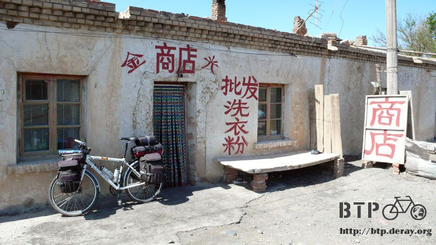
吃完之後只覺得胃還是好空蕩，我剛剛真的有吃東西嗎？
重新走進商店裡，買了一碗泡麵，用店裡的熱水泡來吃，在等麵熟的時候，店裡面跑出一個小傢伙。
他只有一歲半，很可愛，爸媽都在烏魯木齊打工，而且沒辦法隨時回家，所以這個小孩才這麼小就看不到爸媽。
我跑出去小多那邊，翻了翻背包拿出一包一塊錢的巧克力給這個小傢伙吃。
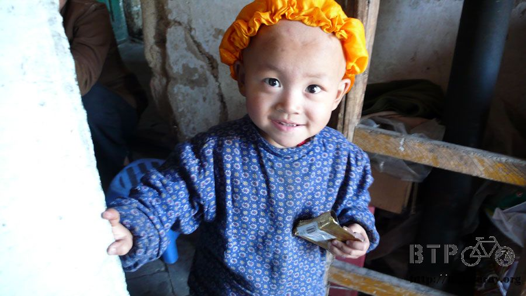
一點都不怕生的他，黏著人的樣子很可愛，雖然還不會講話，但是大大的眼睛咕溜咕溜的轉著，很惹人疼。
負責照顧她的婆婆說，他是第一次吃巧克力，幫他拆掉包裝，看著他慢慢的吃，小孩吃糖果不需要人教，這是與生俱來的本能。
邊吃泡好的泡麵，邊跟老闆娘聊天，原來這個沒落的小鎮，以前可是鼎鼎有名的鹽城火車站，風光的很。
可惜美好的年代已經過去，如今不論是載人的還是載貨的火車，都是過站不停，小鎮也凋零的變成如今的模樣。
問一下我比較關心的問題『這再往前走，一路到烏魯木齊，都是這麼大的風嗎？』
老闆娘說烏魯木齊不怎麼颳風，從鹽城大概再走十幾公里，那邊風就會小一點了。
這個消息真是比中統一發票普獎還要高興！只要再忍受十幾公里的強風，苦難就結束了！
老闆娘沒有很明確的說十幾公里到底是幾到多少，所以就算是十五公里好了。
吃完泡麵跟小傢伙說掰掰，繼續以時速六公里像烏龜爬一樣的騎車，短短的十五公里，竟然要騎兩個半小時才會到，真是難以想像的速度。
而且兩個半小時之後，是一個什麼鬼都沒有的地方，並不像老闆娘說的那樣有個城鎮，在那吃住都很方便。
而且更令人嘆氣的，風勢一點也沒有變小，反而有越來越大的趨勢，忽左忽右的逆風，不是把我推下路面，就是往經過的車輛那邊推過去。
下午三點多，看到遠方有黃澄澄的景色，很像是湖水，但是距離有點遠所以不太確定。

反正騎車也是那麼慢，不如繞過去看一下是什麼東西好了，先牽著小多一起走過去，放在路邊太危險了。
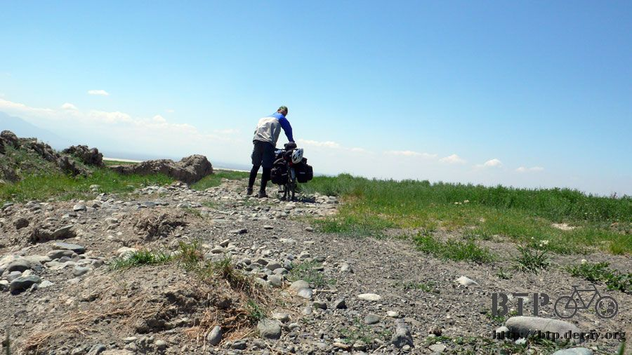
路變的有點難走之後，就把小多藏起來，自己散步走過去。
這裡有很漂亮的草原，草原上都是各式各樣的大便，所以這邊一定放牧了很多羊、牛之類的動物。
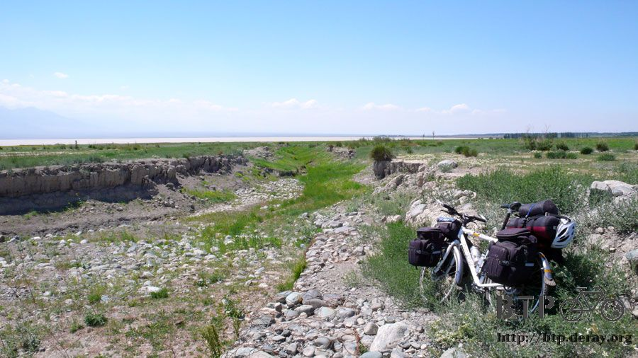
天氣很涼快，氣溫在二十五度之間徘徊，大風吹個不停，吃草的羊咩咩三兩隻的窩在一起互相保暖，吃飽了就窩著一起睡覺，很可愛。

完全不怕生的羊咩咩，只要我動作輕一點，就算走到牠們旁邊，也不會驚嚇到牠們，只是看我一眼，然後繼續吃草。
看他們的品種，還有幾隻光禿禿的，應該是綿羊吧。
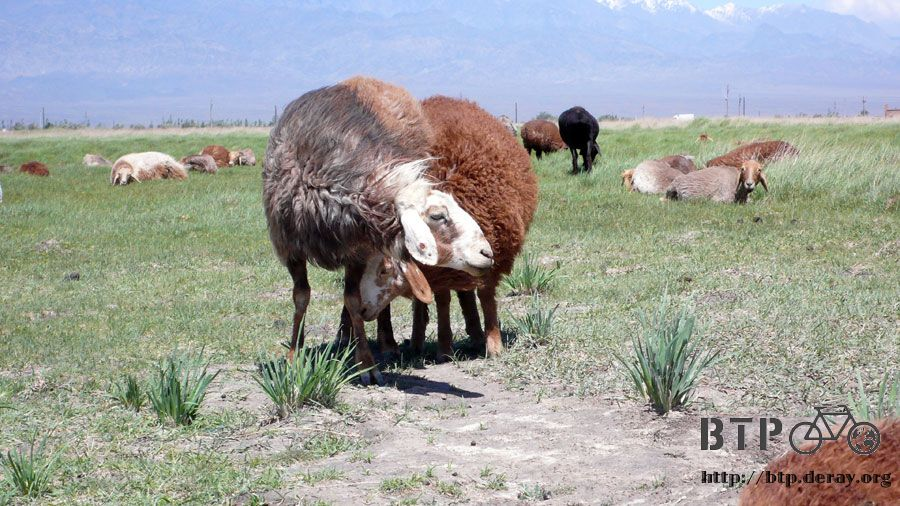
真是抱歉到了新疆之後我一直在吃羊肉料理，你們除了很可愛之外，同時也很好吃的說。
這位是羊咩咩的主人，這裡看的到的羊都是他的，旁邊是他的小孩。

繼續往湖邊走，各式各樣的植物是以區塊狀的方式生長，各有各的領域，互不侵犯。
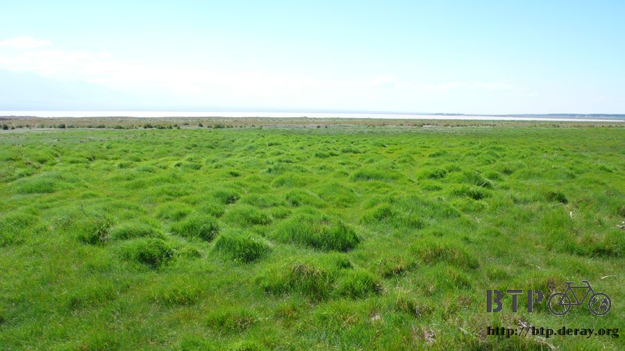
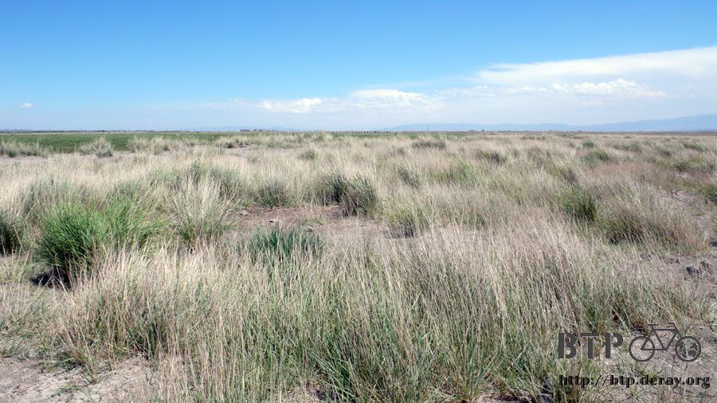
越往湖邊的方向走越能確定這是一座湖泊，波濤洶湧的湖水不停的拍打著岸邊。
如此黃澄澄的湖水簡直比黃河還要黃。

羊咩咩的主人說，湖水這麼黃是因為颳大風的關係，導致湖水翻騰，讓底下的泥砂都給捲起來了。
平常要是沒有風的時候，這個湖水是完全清澈的，一點雜質也沒有。

因為風勢很大，所以浪花也很大，不停地往岸邊沖刷，不說這是湖泊的話，看起來還真像是海邊一樣。

沿著湖邊走，往另一邊的牧羊處走去，拍幾張照片做紀念，然後我發現自己忘了把小多停在哪裡。
這片草原還真是夠大的，我剛剛又把小多藏在凹陷處的地方，所以費勁的找了一會才找到。
一看到小多，我就用雙手畫了一個圓，說這邊養了好多好多的羊。

然後再用雙手比著波浪的樣子，說前面有一個很大的湖泊，波浪像海一樣的大。
跟小多講話已經變成習慣了，今天看到什麼、剛剛吃了什麼、或是心裡突然有什麼想法，第一個都會先跟小多分享。
每天睡醒的第一句話，都是『早安～小多』，出發的那一刻，也是『走吧～小多！』
小多是一個很值得的信賴好夥伴，一路上任勞任怨的背負那麼多東西，還要載著我騎車，偶爾我扛小多爬一下樓梯，
心裡都在滴咕說『你真的很重耶，要不要考慮減肥一下。』殊不知會這麼重都是因為我買了一堆的零食。
四點半離開湖區，此時距離烏魯木齊還有五十公里遠。
如果風勢不減弱，繼續以每小時六公里的速度前進，到烏魯木齊已經是凌晨了。
從湖邊再往前騎一段路，才到吃泡麵那個商店的老闆娘所說的小鎮，正確來說應該是二十幾公里，而不是十幾公里。
到這裡也不用吃午餐了，吃晚餐比較快，可是我依然什麼都沒吃，視商店招牌為無物。
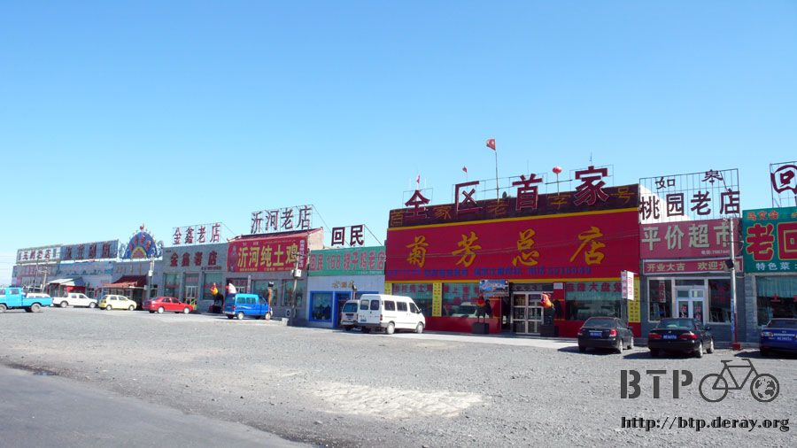
找一間雜貨店買兩支很好吃的當地產牛奶雪糕，繼續問我的老問題：
『繼續往前走，一路到烏魯木齊，風都這麼大嗎？』
大家不是很有把握的回答，有人說風一路都這麼大，也有人說前面就是風力發電站，過了那個風口，風說不定會小一點。

風勢會不會減弱，關係到今天騎到烏魯木齊的時候是半夜還是天明，既然這樣，那就繼續趕路吧。
明明近在眼前，卻要費盡千辛萬苦才能抵達，中國的最後這一關，走的一點也不容易。
離開城鎮果然沒多遠就看到風力發電的風車，粗略估計應該有萬支以上，本來就是嘛，這麼大的風，不設置風力發電實在太可惜了。
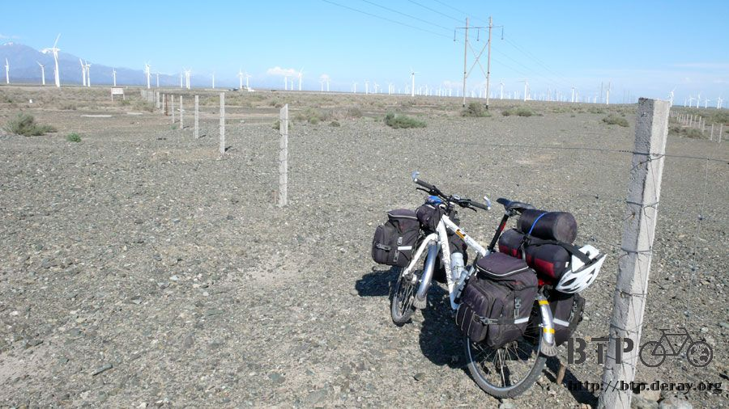
一路從吐魯番都可以設置，尤其是那個三十里風口，還要小心風車會被強風給吹斷。
上次看到風力發電已經是在甘肅的事情，新疆因為油田很多，能源充沛，但能看到環保的發電方式還是令人高興。
因為這個景色太壯觀、太漂亮了，還有拍婚紗的新人到這裡來取景。

離開風力發電區，風勢就會變小了，再加油一下。
雖然連商店的人都不確定這樣的訊息正不正確，可是總是我的一線希望。
風勢並不像我期待中的那樣嘎然而止，隨著騎入山區，翻著小山嶺，往烏魯木齊剩下大概二十五公里左右，
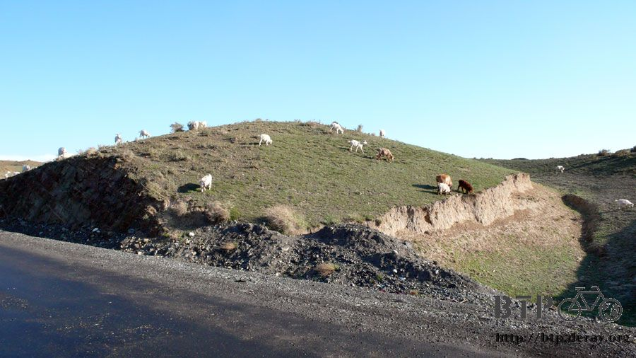
風勢終於一點一點的變小，慢慢的減弱成會防礙騎車速度、但不影響騎乘安全的程度。
碼表顯示的速度也從六公里，慢慢回升到十五公里，雖然一樣是慢，但對龜了一整天的我來說，已經是加速奔馳了。

一整天都騎的慢，可是一點也沒有比較輕鬆，雙腿都發軟無力，太陽眼鏡也在前天被大風給吹走，所以只能戴一般的眼鏡。
擋不了強光和紫外線，眼睛乾澀的眨眼就會痛，好加在有眼藥水，要抵著眼球滴，不然一滴下來馬上就被強風給吹走，滴不到眼睛裡。
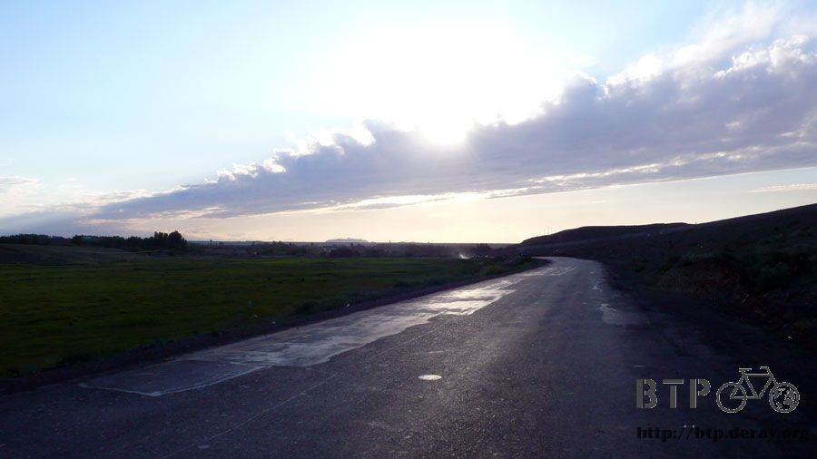
慢慢的翻著進入烏魯木齊前的小山丘，一會爬坡一會下坡，多虧有高速公路幫忙分散車流，這段山路還算平靜好走。
晚上九點之後離開了山區，開始可以看見城市的形貌，我還以為這裡就是烏魯木齊，『不怎麼樣嘛，只是個小地方』，心裡評估著。
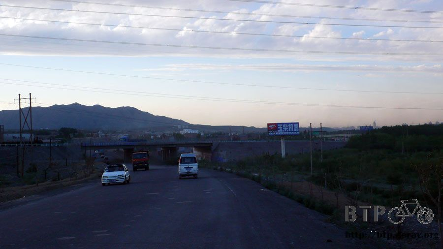
但是這裡距離烏魯木齊還有十公里，騎在河灘路上快意奔馳，烏魯木齊真的不起風，噩夢般的風口終於渡過了。

河灘路騎起來很爽，當然這邊是禁行自行車，但是誰管它呢，衝呀！小多！我們終於要到烏魯木齊啦！
烏魯木齊對我來說根本就是一個幻想中的城市，它所處的位置太遙遠，名字又充滿幻想，
還沒到之前，我根本無法想像這裡是什麼樣的城市，有著什麼樣的面貌。
在逆風中騎了一天的車之後，這個長久以來的幻想終於可以化為真實，我在中國的最後一個大城市，也是這趟旅行的補給點，
烏魯木齊到了！
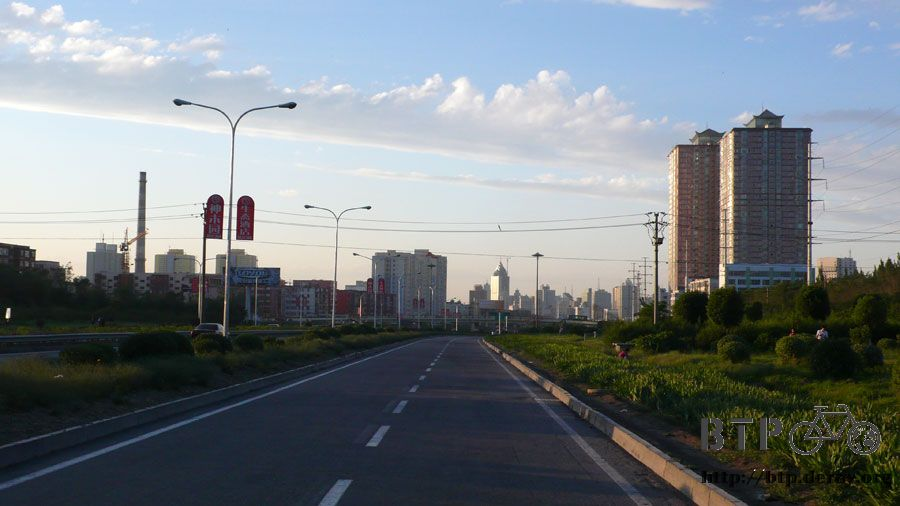
一棟棟的高樓大廈，美麗的綠意造景，寬大的馬路與喧鬧的城市，知名品牌的商店櫛比鱗次。
在經歷過新疆這麼多的荒原和沙漠，如今又重新回到這麼宏偉的大城市，心裡很多感慨。
烏魯木齊，比起台北或是之前所經過的任何一個大城市，絲毫不遜色，這裡真的是新疆嗎，太令人不可置信了。
雖然早就預料到會是一個很大很熱鬧的城市，但是它的規模還是遠遠超乎了我的想像。
這裡真的可以說是新疆人的驕傲。
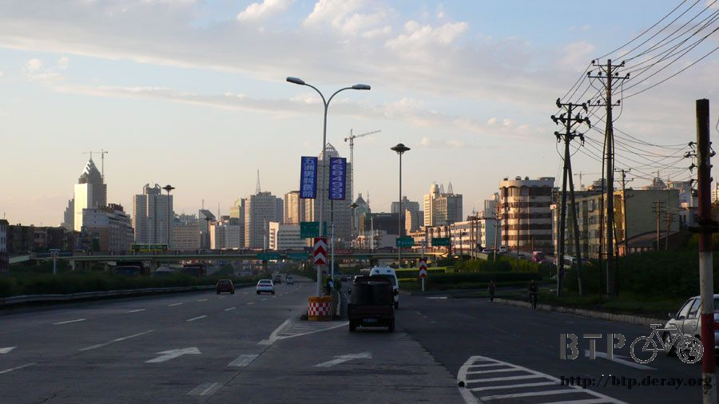
問了幾個路人，往補給品寄到的那個電腦城移動，住離這邊近一點，領我的東西也比較方便。
很幸運的在電腦城周邊三百公尺的地方找到招待所，最便宜的房間一晚上二十元，先住兩個晚上再講，不夠再接著住就好了。
雖然住宿費很便宜，可是這間招待所非常的高級，該怎麼形容呢....這是將近五十天旅行以來，第一個有電梯的過夜處。
在員工幫我填表格的時候，我跑出去外面買了大份的炒涼粉還有兩根關東煮吃。
炒涼粉超好吃的，之前在西安吃過一次，味道很像蘿蔔糕，口感軟軟的，配上芝麻醬、蒜泥、辣椒醬，真是美味極品。
招待所有一位長住的客人，他看我吃這個普通到不行的街邊小吃都感動成這樣。
『這是我今天吃的第一餐。我餓死了。』，他點點頭表示明白。
聽他說明這邊的環境，真的很幸運，住的地方交通也是超級方便，要去哪邊這裡都有車子可以搭，便宜又方便的招待所。

簡單的就填飽了肚子，這陣子老是吃燒烤，實在太花錢了，再不節省一點就要變成暴發戶的旅行方式。
雖然房間(三人房)裡面已經有住一個人，但是他明天就走，看起來也不像壞人，再說我晚上也不出去了，所以不怕掉東西。
等他一走，這間房間就是我的天下啦～哇哈哈哈
烏魯木齊入夜之後依然很熱鬧，外頭的叫賣聲，路人的嬉鬧聲不絕於耳，一直到半夜兩三點，才漸漸回歸沉靜。
順利的騎到烏魯木齊對我來說是一大鼓舞，想當初還在規劃行程的時候，連怎麼從北京騎到烏魯木齊都搞不清楚，
如今真的被我騎到了，這一路上將近五千公里的路，有風有雨有笑有淚，總是讓我平安的抵達了烏魯木齊。
雖然離目的地：巴黎還有一萬公里以上，但是此刻我的心情，離抵達終點只有一步的距離。
繼續閱讀：6.10 愛的補給品
中國-人民幣－ 1：4.3 台幣
6.9 |
總計：32.5元 |
午餐泡麵3.5元、可樂3元、冰棒兩支1元、住店20元、晚餐炒涼粉2元、可樂3元 |
|